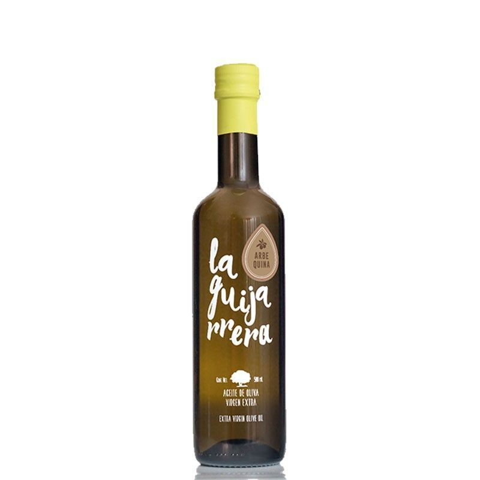

AOVE CORNICABRA 500ML

Precio: 9,00€
Se trata de un aceite virgen extra proveniente únicamente de la aceituna Cornicabra, con un sabor frutado y fresco, esta variedad de aceite posee aromas de hojas verdes, almendra y tomate. Este aceite presenta un armónico equilibrio entre el dulce y el amargo de las hojas verdes, con unas notas de frutos del huerto e incluso exóticos como el aguacate.
AOVE PICUAL 500ML
Precio: 5,10€
Se trata de un aceite virgen extra proveniente únicamente de aceitunas de la variedad “picual”. Es un aceite con una gran fuerza y cuerpo. Sabor con notas de madera, plátano y hierba recién cortada, presentando un ligero amargo y picante, que dotan a este aceite de una gran personalidad.
AOVE ARBEQUINA 500ML
Precio: 6,10€
Este aceite ha sido elaborado con aceitunas de la variedad arbequina. Aceite con frutado verde medio e intensidad alta, en atributo positivo manzana. Destacar el equilibrio en boca entre amargos y picantes, predominando la presencia de almendra en el conjunto de matices maduros.